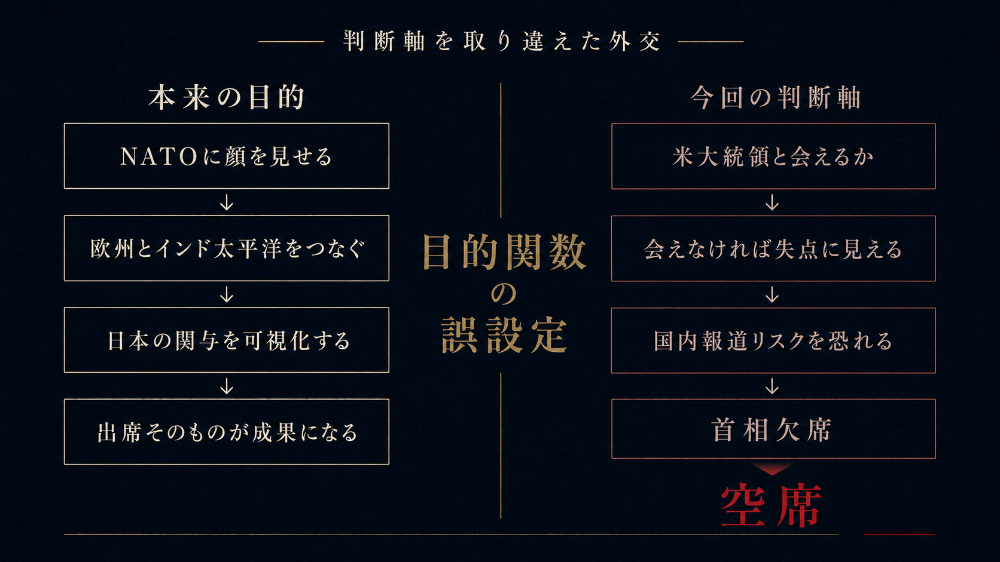
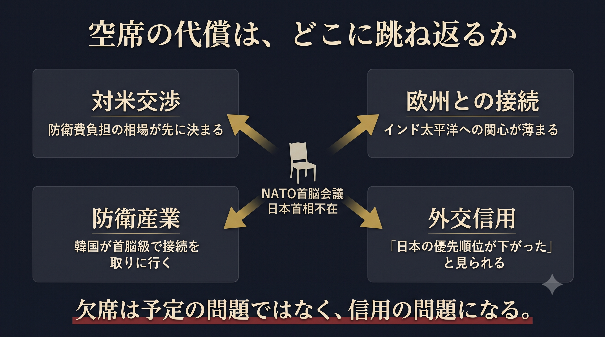
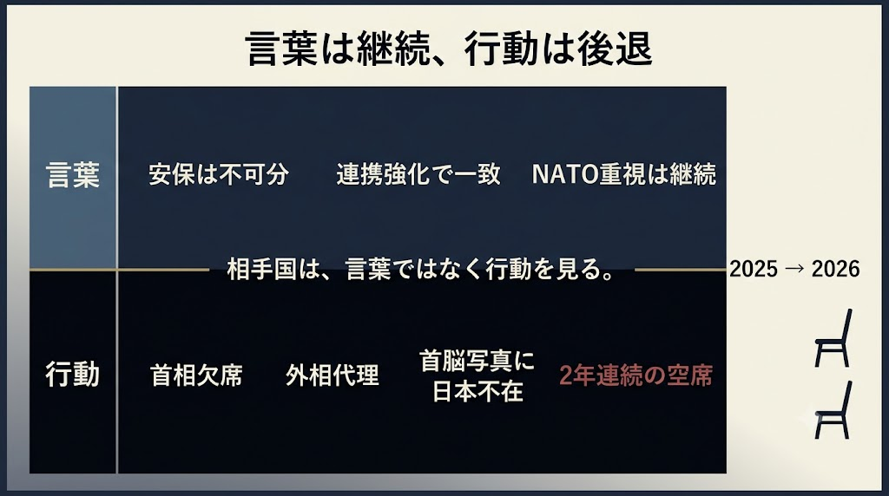

今回の欠席で最も高くついたのは、アンカラの空席ではない。「トランプ米大統領との個別会合が見込めないため」という判断軸が世界に公開されたことである。北大西洋条約機構（ＮＡＴＯ）首脳会議への出席を、米大統領と会えるかどうかで値踏みする。この物差しの選び方そのものが、本来のＮＡＴＯ重視路線からの実質的な後退を意味している。
首相の席に、外相が座る
７月７日から８日、トルコの首都アンカラにＮＡＴＯ加盟32カ国の首脳が集まる。議長国トルコは高市早苗首相を直接招待した。だが、日本の席に着くのは茂木敏充外相である。首相欠席は石破茂前政権に続いて２年連続となる。韓国の李在明大統領は、アンカラの席に着くことにした。
出席それ自体が、成果物になる
そもそも、日本の首相がこの会議に出る主目的は何か。答えは過去の出席が示している。顔を見せること、それ自体である。この外交方針をたどれば、安倍晋三政権にたどり着く。
安倍元首相は、日本が加盟しているわけでもないＮＡＴＯを重視した。それは①「法の支配」や「民主主義」といった普遍的価値を共有する欧米との連携を深める②日本単独の安全保障体制を補完し、中国や北朝鮮などの脅威に対抗する抑止力を高めるため—だった。２００７年に日本の首相として初めて北大西洋理事会（ＮＡＣ）で演説し、関係強化の基礎を固めた。
２０２４年の首脳会議では、岸田文雄首相がパートナー・セッションに座った。加盟32カ国にEU、ウクライナ、ＩＰ4（日本・韓国・豪州・ニュージーランド）が同席し、ウクライナ情勢とインド太平洋の連動が議題になった。岸田氏はその席で「欧州・大西洋とインド太平洋の安全保障は不可分」と訴えた（外務省）。日本の首相がそこに座っている絵そのものが、欧州の戦略関心をインド太平洋につなぎ止める仕事をしていた。首脳会議とは、出席が成果物になる種類の外交である。米大統領との個別会談は、あれば良い副産物になるとして、主目的ではない。
目的関数を、入口で間違えた
官邸の計算に理屈がなかったわけではない。真に恐れたのは「同じ会場にいたのに会えなかった」「会えたが立ち話で終わった」という構図だろう。疑惑対応で消耗した政権にとって、「首相、トランプ氏と会談かなわず」の見出しは国内で失点になる。行って恥をかくくらいなら、行かない。リスク回避としては筋が通って見える。
だが、この恐れが成立するのは、首脳会議の価値をトランプとの写真で測った場合だけである。主目的を「ＮＡＴＯに顔を見せること」と正しく置いていれば、個別会談の不成立は失点ですらない。「今回は多国間協議が主目的」と先に言っておけば済む話で、期待値の統制は外交実務の初歩に属する。目的を取り違えたから、ありもしない失点を恐れた。恐れたから、席を空けた。判断の入口で目的関数を間違えると、そこから先の計算はどれだけ精緻でも全部ずれる。

これは巧拙の問題にとどまらず、資質の問題であるとの見方も免れない。外交目的を取り違えた判断が、官邸の最上層で止まらずに通った。国会日程と外交日程を同じ盤面で差配し、「その判断軸はおかしい」と言える側近も不在だった。
空けた席の代償は、どこに跳ね返るか
空けた席の代償はどうなるか。米国がＧＤＰ比５％の防衛費を全加盟国に迫るアンカラは、同盟国の負担の相場が決まる交渉現場で、その相場は来年以降の対日要求に跳ね返る。米国が欧州駐留態勢を今後６カ月で見直し、対中抑止へ重心を移すいまは、欧州をインド太平洋に係留する働きかけの価値が最も高い局面だった。欧州が防衛投資と兵器生産を急拡大するなかで、韓国は防衛産業とNATO標準への接続を首脳レベルで取りに行く。直接招待に外相代理で応えられた議長国、トルコも高市首相の欠席をどう受け取るか。

言葉は継続、行動は後退
より深刻なのは、この後退がまともな議論もないまま決まったことだ。公式方針は「継続」である。高市首相は昨年12月にルッテ事務総長と電話会談し、連携強化で一致した。外務省幹部は「安保は不可分という基本方針に揺らぎはない」と言う。言葉は継続だが、行動は２年連続の首脳不在となった。相手国は行動の方を信じ、最悪の場合は「日本の優先順位が下がった」という位置づけを採用する。「ＮＡＴＯ関与を絞る代わりに何を取るか」という取引が設計できているわけでもない。漂流による転換は信用だけを失う。

写らない写真が、二年分
「外相と防衛相の同時派遣で実務は担保される」という擁護は半分正しい。サイバーや防衛産業の実務協力は閣僚級で回る。ただし首脳会議の固有価値は実務ではなく、首脳の顔と席次である。茂木外相がどれだけ会談を重ねても、首脳セッションの写真に日本の首相は写らない。写らない写真が、これで２年分積み上がった。
「欧州・大西洋とインド太平洋の安全保障は不可分」という看板は残った。入れ替わったのは判断の物差しの方である。どちらがこの国の外交方針なのか。世界はその答え合わせを、次の首脳会議まで待ってくれるだろうか。
主要参照資料
・外務省「ＮＡＴＯ首脳会議・パートナーセッション概要」（2024年、岸田首相「欧州・大西洋とインド太平洋の安全保障は不可分」発言）
・安倍晋三首相 北大西洋理事会（ＮＡＣ）演説（2007年、日本の首相として初）
・ＮＡＴＯアンカラ首脳会議（2026年7月7〜8日、加盟32カ国、議長国トルコ）